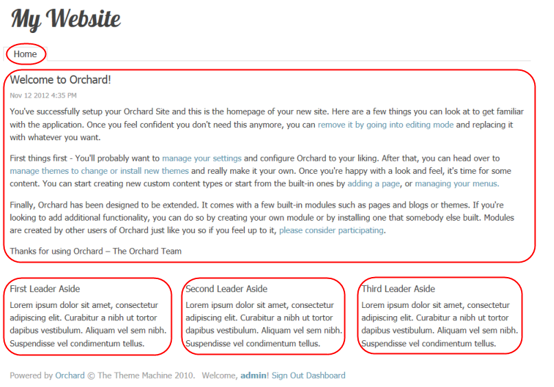
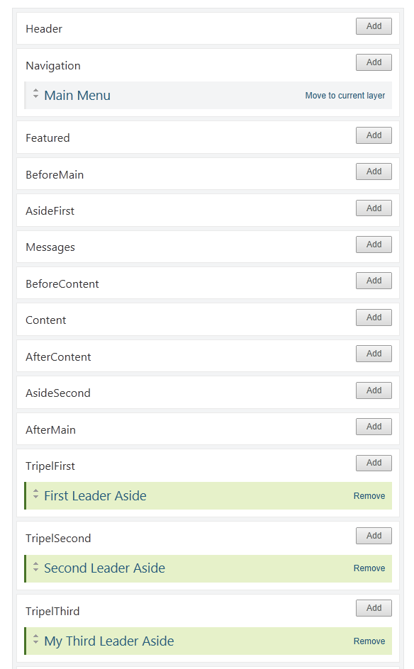
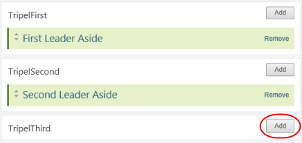
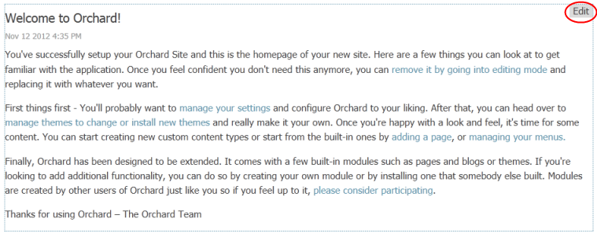

建立你的第一个Orchard网站-Building Your First Orchard Site
This topic targets, and was tested with, the Orchard 1.8 release.
- 本主题针对Orchard 1.8版本进行了测试，并进行了测试。*
This walkthrough provides a glimpse of the features that Orchard has to offer, provided as a step-by-step guide. If this is your first time using Orchard, this document is for you!
本演练将逐步介绍Orchard提供的功能，作为分步指南提供。如果这是您第一次使用Orchard，本文档适合您！
Getting Started with Orchard
Orchard入门
Being new to Orchard, you should know the right place where you can find the resources and latest information about Orchard.
作为Orchard的新手，您应该知道正确的地方，您可以找到有关Orchard的资源和最新信息。
1. 果园初学者
2. [GitHub中的Orchard - Orchard Code Repository] 1
3. 关于Stack Overflow的Orchard问题 - Orchard Q＆A
5. Orchard社区网站 - 来自世界各地的Orchard社区网站
1：https：//github.com/OrchardCMS/Orchard
2：http：//docs.orchardproject.net/
3：https：//stackoverflow.com/questions/tagged/orchardcms
4：http：//orchardproject.net/
5：http：//orchardproject.net/meeting
6：http：//orchardbeginner.com
This topic assumes that you have already installed Orchard and set up your website. If you haven't, follow the instructions in Installing Orchard.
本主题假定您已经安装了Orchard并设置了您的网站。如果还没有，请按照[安装Orchard]（安装 - Orchard）中的说明进行操作。
There are plenty of options to get up and running with Orchard without installing Orchard on your local machine or local IIS Server.
如果没有在本地计算机或本地IIS服务器上安装Orchard，有很多选项可以启动和运行Orchard。
Try Orchard
尝试果园
Try Orchard! is a showcase for the Orchard content management framework: you can try how Orchard feels by checking out an already running demo site where you can play with Orchard as you wish.
[尝试Orchard！]（http://tryorchard.net/）是Orchard内容管理框架的展示：您可以通过查看已经运行的演示网站来尝试Orchard的感受，您可以根据需要与Orchard一起玩。
No registration, no setup, nothing required, you can just go to Try Orchard!, open one of the continuously re-installed demo sites and play with it. This is the simplest way of taking the first steps with Orchard.
没有注册，没有设置，没有必要，你可以去[尝试果园！]（http://tryorchard.net/），打开一个不断重新安装的演示网站并玩它。这是与Orchard迈出第一步的最简单方法。
Be aware though that Try Orchard! is really just for testing: since the demo sites are wiped out hourly you don't try to publish your blog there!
请注意尝试果园！实际上只是用于测试：由于每小时都会删除演示站点，因此您不会尝试在那里发布您的博客！
DotNest : Orchard SaaS provider
DotNest：Orchard SaaS提供商
DotNest is the Orchard SaaS provider: this means that you can simply register and create Orchard websites that run in the cloud without any hassle. Your website will just work: you don't have to deploy and later upgrade it, you can just use it.
[DotNest]（http://dotnest.com/）是Orchard SaaS提供商：这意味着您可以轻松注册并创建在云中运行的Orchard网站，而不会有任何麻烦。您的网站将正常工作：您不必部署并在以后升级它，您可以使用它。
With DotNest you can try out Orchard very simply, very quickly and since your website is already hosted for you you can also show it to everybody. Apart from getting used to the user interface and features of Orchard you can also get into the basics of Orchard theme development with it and style and customize your Orchard website in a lot of ways.
使用DotNest，您可以非常简单，快速地尝试Orchard，因为您的网站已经为您托管，您也可以向所有人展示。除了习惯Orchard的用户界面和功能之外，您还可以使用它来进入[Orchard主题开发的基础知识]（http://dotnest.com/knowledge-base/topics/theming）并定制您的Orchard网站有很多方面。
Convenience does come with disadvantages: due to the architecture of DotNest you can't install custom modules, so you have to use what is already available (that however should be enough for a big part of websites).
便利确实存在缺点：由于DotNest的体系结构，您无法安装自定义模块，因此您必须使用已有的（但对于大部分网站而言应该足够）。
1) What is DotNest
1）什么是 DotNest
2) Click New Tenant to create a new tenant on DotNest
2）点击 New Tenant 在DotNest上创建一个新租户
3) Fill in the required details to create a New Tenant
3）填写所需的详细信息以创建新租户
3) New Tenant successfully created
3） 新租户成功创建
Orchard on Azure Websites
Azure网站上的Orchard
After a free registration you can create websites from the Azure Gallery where you can select Orchard to deploy in one click too.
在[免费注册]（http://azure.microsoft.com/en-us/services/websites/）之后，您可以从Azure Gallery创建网站，您也可以在一次单击中选择Orchard进行部署。
Your Orchard site on Azure Websites will be completely under your control: you can install any module and theme you want too. However this also comes with responsibilities: you have to maintain your website yourself, upgrade and fix it as necessary.
您在Azure网站上的Orchard站点将完全在您的控制之下：您也可以安装任何您想要的模块和主题。但是，这也有责任：您必须自己维护您的网站，根据需要升级并修复它。
Changing The Layout Of The Home Page
更改主页的布局
Out of the box, Orchard applies a theme to your website known as the "Theme Machine". The Theme Machine includes CSS styles and a layout. Orchard allows you to selectively include or exclude portions (zones) of the layout on each page of your website.
开箱即用，Orchard将一个主题应用到您的网站，称为“主题机”。主题机器包括CSS样式和布局。 Orchard允许您在网站的每个页面上有选择地包含或排除布局的部分（区域）。
The Navigation zone contains a menu with a single tab, Home. The TripelFirst, TripleSecond and TripleThird zones at the bottom of the page are populated with dummy text in the First Leader Aside, Second Leader Aside and Third Leader Aside paragraphs.
导航区域包含一个带有单个选项卡 * Home 的菜单。页面底部的 TripelFirst，TripleSecond 和 TripleThird 区域在 First Leader Aside ， Second Leader Aside 和 Third Leader Aside 段落中填充了虚拟文本。
In addition to zones, every page has a central region (In this case, the text from "Welcome to Orchard" to "Thank you for using Orchard") which, for this tutorial, will be referred to as the Body of the page.
除了区域，每个页面都有一个中心区域（在这种情况下，文本从“欢迎来到Orchard”到“感谢您使用Orchard”），对于本教程，将被称为 页面的正文**。

Although the Theme Machine has many possible zones defined, on a given page the only zones visible will be zones that have had widgets added to them (you can learn more about widgets here). The Navigation, TripelFirst, TripelSecond and TripelThird zones are visible on the home page because they contain widgets.
虽然主题机器定义了许多可能的区域，但在给定页面上，可见的唯一区域将是添加了小部件的区域（您可以了解有关小部件的更多信息[此处]（Managing-Widgets））。 Navigation，TripelFirst，TripelSecond和TripelThird区域在主页上可见，因为它们包含小部件。
1) Select Widgets from the Dashboard.
1）从仪表板中选择小部件。
The Widgets management page opens with the Default layer selected. Any zone that is visible in the Default layer will appear on all pages. Therefore, the Navigation zone is visible on
将打开“窗口小部件”管理页面，并选中“默认”图层。默认图层中可见的任何区域都将显示在所有页面上。因此， Navigation 区域可见
all web pages and has a Main Menu widget. The Main Menu widget is annotated in green because it has been added to a zone in the current layer.
所有网页都有主菜单小部件。主菜单小部件以绿色标注，因为它已添加到当前图层的区域中。
2) Select the HomePage layer to see which zones are visible for the home page.
2）选择 HomePage 图层以查看主页可见的区域。
Widgets which have been added to zones in the selected layer will be annotated in green (FirstLeaderAside, SecondLeaderAside and ThirdLeaderAside). Widgets which have been added to zones in other layers will be annotated in gray (Main Menu).
已添加到所选图层中区域的窗口小部件将以绿色标注（FirstLeaderAside，SecondLeaderAside和ThirdLeaderAside）。已添加到其他图层中的区域的窗口小部件将以灰色标注（主菜单）。

The TripelFirst, TripelSecond, and TripelThird zones on the home page have widgets in them and are visible. Removing all of the widgets in a zone will make the zone invisible.
主页上的TripelFirst，TripelSecond和TripelThird区域中包含小部件并且可见。删除区域中的所有小部件将使该区域不可见。
3) Select Remove for the Third Leader Aside widget.
3）为第三领导者旁边小部件选择删除。
The TripelThird zone will no longer be visible on the home page.
主页上将不再显示TripelThird区域。

4) Select Add for the TripelThird zone to add a widget to the zone.
4）为TripelThird区域选择 Add 以将小部件添加到区域。

5) Select the HTML Widget to add this type of widget to the TripelThird zone.
5）选择 HTML Widget 将这种类型的小部件添加到TripelThird区域。

6) Enter a title for your widget and some content.
6）输入小部件和一些内容的标题。
7) Save the new widget.
7） 保存新小部件。
8) Select Your Site in the upper-left side of the Dashboard to view the modified home page with the new TripelThird zone.
8）在仪表板的左上角选择您的站点以查看带有新TripelThird区域的已修改主页。
Editing The Content Of The Home Page
编辑主页的内容
Orchard provides a feature that makes it easy for you to edit the content in a zone or the page body. To turn on this feature you must enable the Content Control Wrapper and Widget Control Wrapper modules
Orchard提供了一项功能，使您可以轻松编辑区域或页面正文中的内容。要启用此功能，您必须启用 Content Control Wrapper 和 Widget Control Wrapper 模块
1) Select Modules on the Dashboard.
1）在仪表板上选择模块。
2) Enable Content Control Wrapper
2）启用内容控制包装器
3) Enable Widget Control Wrapper
3）启用小部件控制包装器
Once these modules are enabled, you can edit the contents of an individual zone by clicking the Edit link (at the top right) in the zone.
启用这些模块后，您可以通过单击区域中的编辑链接（位于右上角）来编辑单个区域的内容。

4) Select the Edit link for the TripelFirst zone of the home page.
4）为主页的 TripelFirst 区域选择 Edit 链接。
5) Change the title, and optionally, change or remove the existing body text for the zone.
5）更改标题，并可选择更改或删除区域的现有正文文本。
Inserting a Media Item
插入媒体项目
6) Select Insert Media Item.
6）选择插入媒体项目。
7) Click Create Folder.
7）单击创建文件夹。
8) Name the folder myImages and click Save.
8）将文件夹命名为 myImages ，然后单击保存。
9) Click the folder myImages, and then click Import
9）单击文件夹 myImages ，然后单击导入
10) Click My Computer and then click in the central zone to browse for an image. If you prefer you can drop your image into the central zone.
10）单击我的电脑，然后单击中央区域以浏览图像。如果您愿意，可以将图像放入中央区域。
11) Close the dialog.
11）关闭对话框。
12) Click the image and click Select.
12）单击图像，然后单击选择。
13) If needed, resize the image using the handlers so that later it fits nicely into the zone. Then click Save to save the changes to the widget.
13）如果需要，使用处理程序调整图像大小，以便稍后它可以很好地适应区域。然后单击保存以将更改保存到窗口小部件。
The home page is automatically displayed with the updated zone.
主页将自动显示更新的区域。
14) Select the Edit link for the Body of the page.
14）为页面的 Body 选择 Edit 链接。

Orchard will display the Edit Page screen.
Orchard将显示编辑页面屏幕。
Note: The Edit Page screen can also be reached from the Dashboard by selecting Content on the Dashboard and then selecting Edit for the page you are interested in.
注意：也可以通过在仪表板上选择内容，然后为您感兴趣的页面选择编辑，从仪表板访问编辑页面屏幕。
15) Enter some text for the content.
15）输入内容的一些文本。

16) Select Publish Now at the bottom of the page to make the updates to the page visible immediately.
16）选择页面底部的 Publish Now ，立即显示页面的更新。
Adding a New Page to Your Site
为您的网站添加新页面
1) In the Orchard Dashboard, under New, select Page.
1）在Orchard Dashboard中，在 New 下，选择 Page 。
2) Enter a title for the page. When you enter a title for the page and save it (for example, "Download"), the permalink (URL) for the page will be filled in automatically ("download"). You can edit this link if you prefer a different URL.
2）输入页面标题。当您输入页面的标题并保存它（例如，“下载”）时，页面的永久链接（URL）将自动填写（“下载”）。如果您更喜欢其他网址，则可以修改此链接。
3) Enter some text for the content page body.
3）为内容页面正文输入一些文本。

4) In the Tags field, add comma-separated tags such as "download" and "Orchard" so that you can search and filter using those tags later.
4）在 Tags 字段中，添加逗号分隔的标签，例如“download”和“Orchard”，以便稍后可以使用这些标签进行搜索和过滤。
5) Check Show on main menu and enter the menu text ("Downloads") to use in the site's main menu.
5）检查在主菜单上显示并输入要在站点主菜单中使用的菜单文本（“下载”）。
6) Select Publish Now to make the updates to the page visible immediately. You can also save the page as a draft (to edit later before publishing), or you can choose to publish the page at a specific date and time.
6）选择立即发布以立即显示页面的更新。您还可以将页面另存为草稿（以便在发布之前进行编辑），也可以选择在特定日期和时间发布页面。
7) Select Your Site in the upper-left side of the Dashboard to view the modified home page with the new menu. Clik Downloads and you will see your new page.
7）在仪表板的左上角选择您的站点以使用新菜单查看修改后的主页。 Clik 下载，你会看到你的新页面。
Adding New Layer for a Page
为页面添加新图层
To change the layout of your new page without affecting the rest of the site you can create a new layer, that will be applied only to the Downloads page. Then you can place some widgets on that layer and they will be visible only in the Downloads page.
要更改新页面的布局而不影响网站的其余部分，您可以创建一个新图层，该图层仅应用于 Downloads 页面。然后，您可以在该图层上放置一些小部件，它们仅在 Downloads 页面中可见。
1) Go to the Dashboard and select Widgets. Then click add a new layer to add a new layer for this page which will allow you to customize the layout for the new page at a later point in time.
1）转到仪表板并选择小部件。然后单击添加新图层以为此页面添加新图层，以便您稍后自定义新页面的布局。
2) Write a name for the layer, a description, and a layer rule: url"~/download". This will instruct the Orchard System to show the widgets in this layer only when the url of the browser is pointing to "download". Select Save.
2）为图层，描述和图层规则写一个名称：url“〜/ download”。这将指示Orchard系统仅在浏览器的URL指向“下载”时才显示此层中的小部件。选择保存。
Adding a New HTML Widget
添加新的HTML小部件
3) To check that your layer rule is working you can add a widget to it. Ensure that Current Layer is Download. Click Add in AsideFirst.
3）要检查您的图层规则是否正常工作，您可以添加一个小部件。确保当前层是下载。单击在 AsideFirst 中添加*。
4) Add a new Html Widget.
4）添加一个新的 Html Widget 。
5) Write a title and a body for it. Save it.
5）为它写一个标题和一个正文。保存。
6) Select Your Site in the upper-left side of the Dashboard. Navigate to Downloads. You should see the custom layout.
6）在仪表板的左上方选择您的站点。导航到下载。您应该看到自定义布局。
Selecting A Theme
选择主题
To customize the look and feel of the Orchard website you change the theme.
要自定义Orchard网站的外观，请更改主题。
1) On the Orchard Dashboard, select Themes. The currently installed themes are listed.
1）在Orchard仪表板上，选择主题。列出了当前安装的主题。
2) To download new themes, select the Gallery tab.
2）要下载新主题，请选择图库标签。
3) Search for PJS.Bootstrap to find the PJS.Bootstrap Theme. Install the PJS.Bootstrap theme.
3）搜索 PJS.Bootstrap 以找到PJS.Bootstrap主题。安装 PJS.Bootstrap 主题。
4) Select the Installed tab.
4）选择 Installed 选项卡。
After a theme has been installed it appears as an option in the Available section on the Installed tab. In the following illustration, the PJS.Bootstrap theme has been installed so it appears in the Available section. (The current theme for the site is PJS.Bootstrap.)
安装主题后，它将显示为 Installed 选项卡上 Available 部分中的一个选项。在下图中，已安装 PJS.Bootstrap 主题，因此它出现在 Available 部分中。 （该网站目前的主题是 PJS.Bootstrap 。）
5) To see how your site will look with an available them, select Preview for the theme. To apply an available theme to your site select Set Current for the theme. For more details, see Previewing and Applying a Theme and Installing Themes.
5）要查看您的网站的可用效果，请选择预览作为主题。要将可用主题应用于您的网站，请为主题选择设置当前。有关更多详细信息，请参阅[预览和应用主题]（预览和应用主题）和[安装主题]（安装主题）。
Extending Orchard With Modules And Features
使用模块和功能扩展果园
A key feature of Orchard is the ability to add new features in order to extend the functionality of your site. The primary way to do this is by installing modules. You can think of a module as a package of files (in a .zip folder) that can be installed on your site. To view the modules that are included with Orchard, in the Orchard Dashboard, click Modules and then click the Installed tab in the Modules screen.
Orchard的一个关键功能是能够添加新功能以扩展您网站的功能。执行此操作的主要方法是安装模块。您可以将模块视为可以在您的站点上安装的文件包（在.zip文件夹中）。要查看Orchard附带的模块，请在Orchard仪表板中单击 Modules ，然后单击 Modules 屏幕中的 Installed 选项卡。
Orchard provides some built-in modules, and you can install new modules. For details, see Installing and Upgrading Modules and Registering additional gallery feeds.
Orchard提供了一些内置模块，您可以安装新模块。有关详细信息，请参阅[安装和升级模块]（安装和升级模块）和[注册其他图库供稿]（Module-gallery-feeds）。
Individual modules can expose features that can be independently enabled or disabled. To view the features exposed by the built-in modules in Orchard, click the Features tab in the Modules screen.
单个模块可以公开可以独立启用或禁用的功能。要查看Orchard中内置模块公开的功能，请单击 Modules 屏幕中的 Features 选项卡。
Each feature has an Enable or Disable link (depending on its current state), as well as an optional list of dependencies that must also be enabled for a specific feature. The documentation throughout this site describes the variety of features in Orchard and how you can use them to customize your site's user interface and behavior.
每个功能都有一个 Enable 或 Disable 链接（取决于其当前状态），以及必须为特定功能启用的可选依赖项列表。本网站中的文档介绍了Orchard中的各种功能，以及如何使用它们来自定义站点的用户界面和行为。
Change History
改变历史
-
Updates for Orchard 1.8
-
Orchard 1.8的更新 *
-
9-04-14: Added new sections for how to get started with Orchard and how to get up and running with Orchard : Try Orchard, DotNest, Azure Websites. Updated screen shots for themes (PJS.Bootstrap Theme), modules and control wrappers.
-
4-22-14: Media selection is different now, updated that part. Adding a widget layer is not suggested anymore when adding a new page, updated that part. Link to registering additional gallery feeds was not working. Updated several screenshots. Added capitalization to section headers.
-
-
Updates for Orchard 1.6
-
Orchard 1.6的更新 *
- 11-25-12: Added section describing how to change the layout for a page by enabling/disabling zones. Removed section on Creating a Blog (which already has it's own topic).
-
Updates for Orchard 1.1
-
Orchard 1.1的更新 *
- 3-14-11: Updated screen shots showing updated menus, and updated dashboard and settings options.